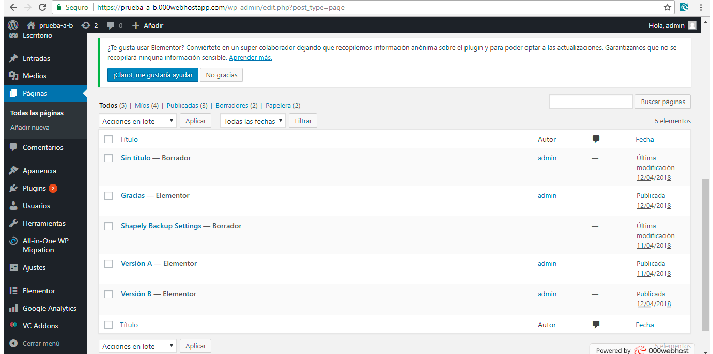
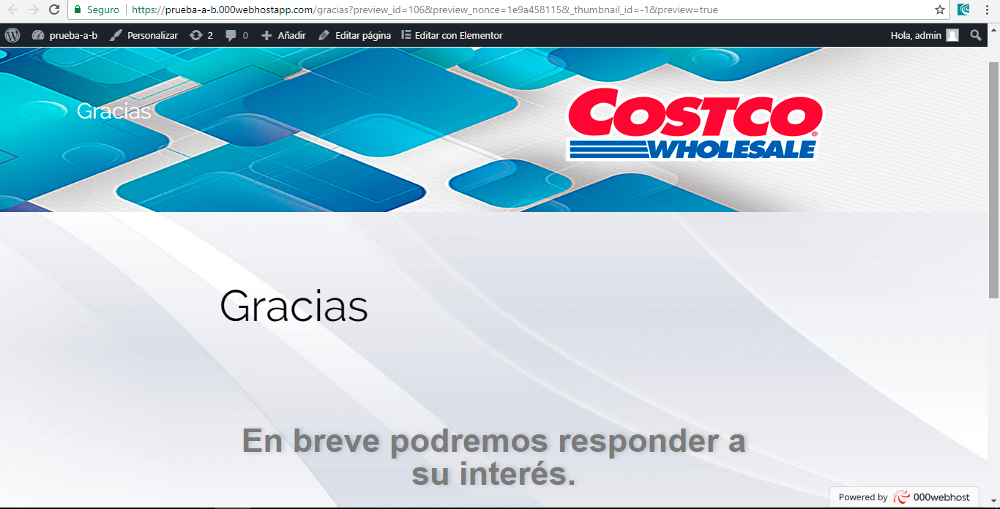
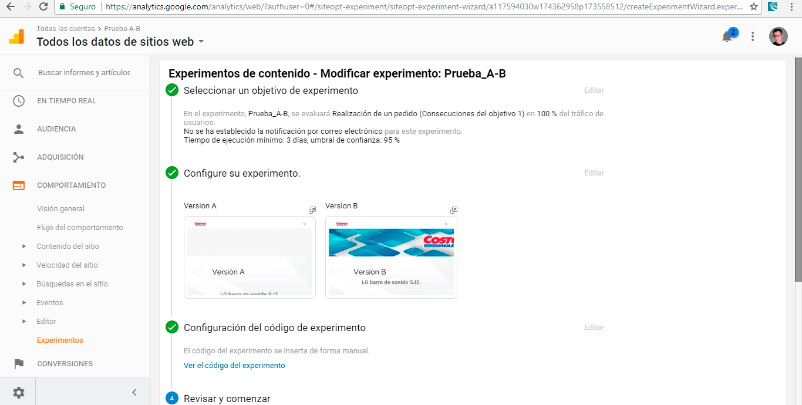
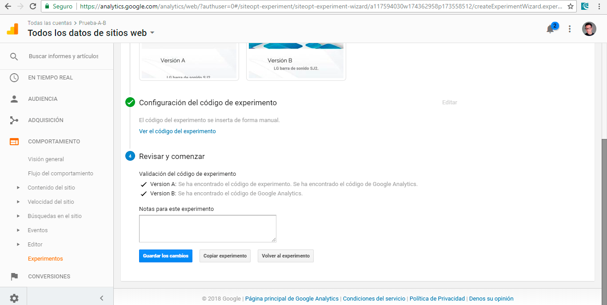
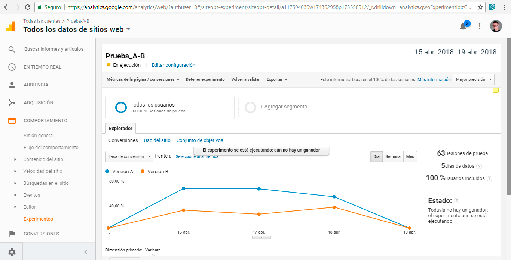
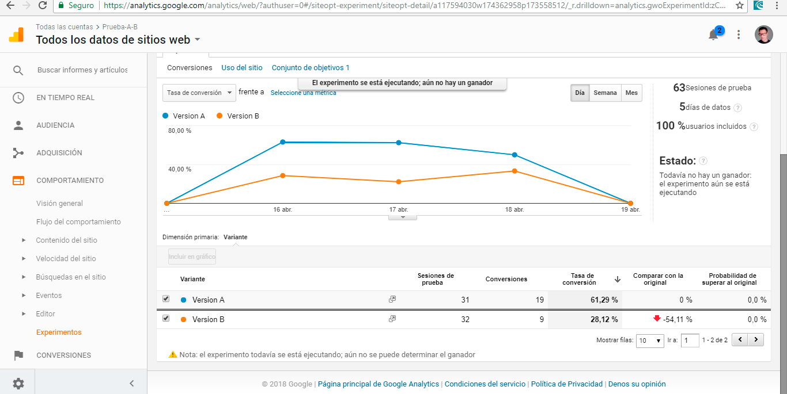
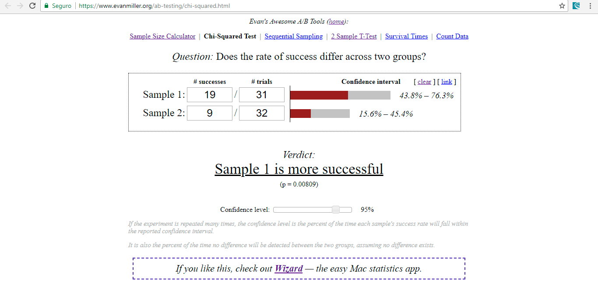
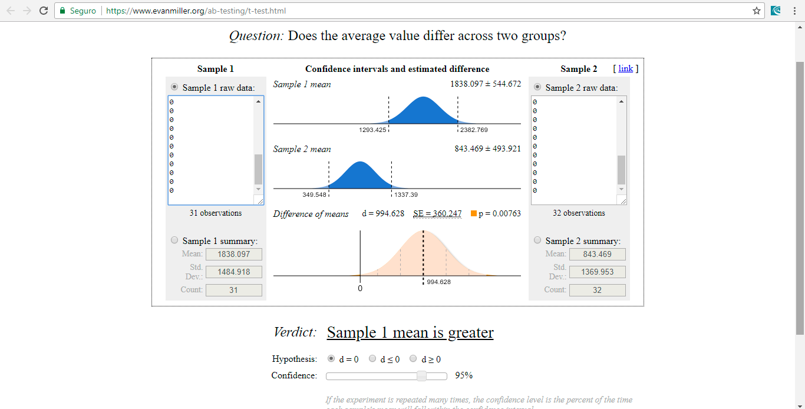

A partir de los hallazgos realizados, genera y valida dos propuestas A/B para la presentación
efectiva del producto de barra de sonido maximizando la conversión de Adición al carrito de
compras realizando los siguientes pasos:
• Utilizando Wordpress, genera una página de aterrizaje que muestre
la propuesta A para cambiar la presentación del producto. En vez de Agregar a mi carrito
pon un botón que diga que Me interesa este producto.
• Crea la versión B de la página, variando únicamente una característica, manteniendo el precio.
Por ejemplo: la foto del producto, especificaciones, textos de apoyo, botón, etc.
• Configura la cuenta de Google Analytics y conectara a tu sitio Web en Wordpress.
• Entra a la página de producto y valida que la conexión funciona.
• Crea un objetivo en Google Analytics Experiment para medir la acción de interés en el producto
dentro de la página del producto.
• Genera un experimento en Google Analytics Experiment enlazando las versiones A y B,
utilizando un nivel de confianza del 95% y una distribución equitativa.
• Inicia el experimento y envia el enlace de la página a tantos usuarios como sea posible.
• Aplica la prueba de Chi-Square Test para validar cuál es la versión ganadora. Toma como beneficio
el valor del producto. Determinar si la diferencia es estadísticamente relevante.
Solución
Proceso Wordpress

La característica Variante en la versión A es que muestra el descuento del precio de lista a
la derecha de la imagen del producto, y la versión B muestra una pequeña descripción del producto,
en vez de dicho descuento.
La página de destino es:

Desarrollo del experimento:




Conclusiones:
A partir de la prueba ejecutada durante 5 días (en realidad 36 horas seguidas), se
lograron recibir 63 sesiones para un 100% de usuarios. Para Google Analytics se muestra
que la Variante A tiene más peso en la conversión. La variante A tuvo 31 sesiones, con 19
conversiones, y la Variante B 32 sesiones, con 9 conversiones. Eso genera un 61,29% de
conversión para la Variante A y 28,12% de conversión para la Variante B.
Continuamos con el análisis de Chi-Square Test:

Muestra que la Versión A (Sample 1) es significativamente más exitosa. Terminando creamos
la Hoja de Cálculo para ver si la diferencia es estadísticamente relevante: El precio del
producto es $ 2.99900. Los resultados son:

Nuevamente, los resultados son concluyentes, la Versión A es la Ganadora.